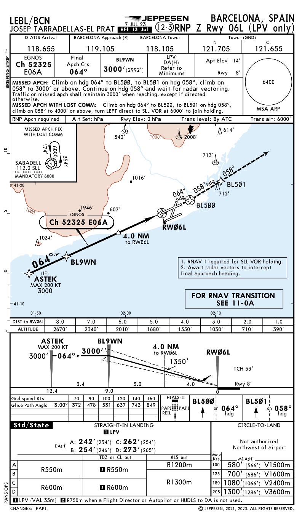

MÓDULO 08 · LECTURA DE CARTAS IFR
Las cartas IFR son parte del pensamiento del piloto
Este módulo enseña a leer cartas Jeppesen con criterio operacional: cómo validar la carta correcta, extraer restricciones, identificar amenazas y transformar la información en un briefing útil para la cabina.
Airport Diagram
SID
STAR
ILS / LOC
RNAV / GPS
LPV
RNP AR
Meta del módulo: que el estudiante deje de “ver una carta” y aprenda a leerla en orden, explicarla, volarla y usarla como herramienta de gestión de amenaza y error.

APROXIMACIONES JEPPESEN
Usa cartas reales para aprender a distinguir estructura, guiado y mínimos
QUÉ LEER PRIMERO
Frecuencias y curso final.
Altitudes publicadas y perfil vertical.
Missed approach completo.
Mínimos ILS versus LOC (si ambos aparecen).

ENFOQUE DIDÁCTICO
Diferenciar no precisión vs precisión / APV.
Leer altitudes recomendadas y restricciones por distancia.
Entender la MDA y el MAP.

QUÉ DEBE ENTENDER EL ESTUDIANTE
Qué significa LPV only.
Cómo leer el final approach course, vertical guidance y mínimos.
Por qué el procedimiento puede exigir configuración RNAV específica.
QUÉ CAMBIA EN RNP AR
Autorización / capacidad específica del operador y la aeronave.
Notas operacionales críticas.
Restricciones de velocidad y trayectoria mucho más sensibles.
Mayor rigor en briefing de frustrada y amenazas de terreno.